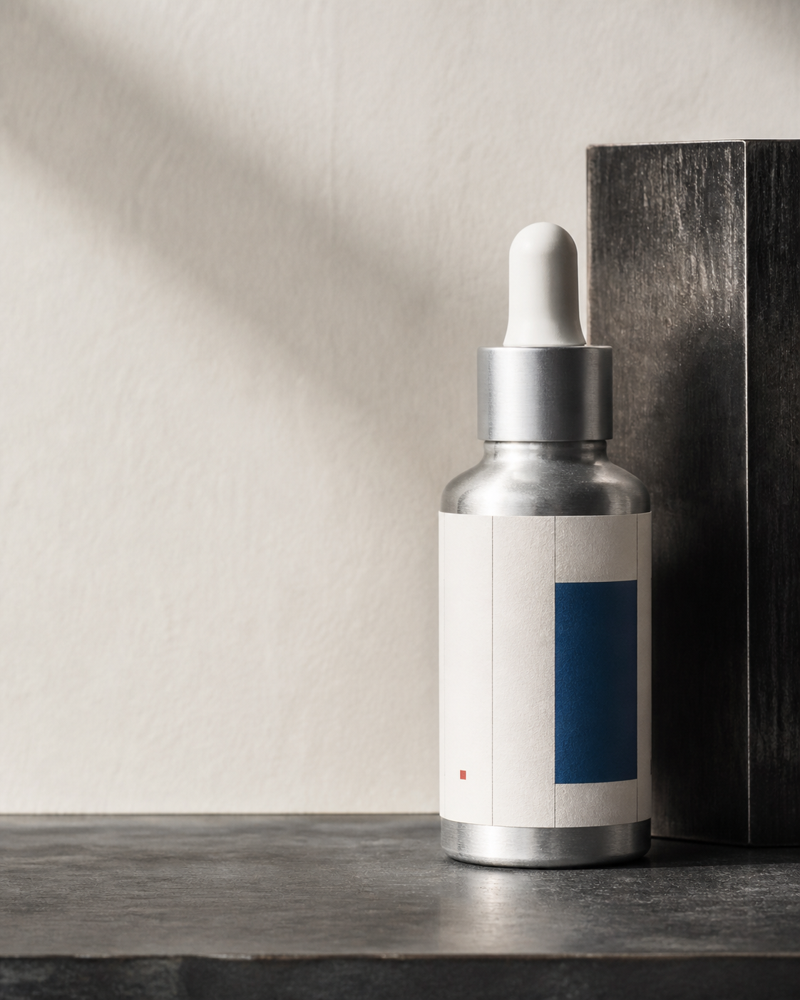
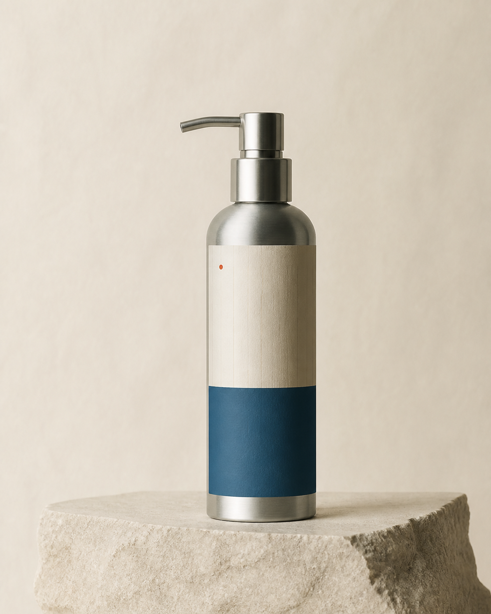
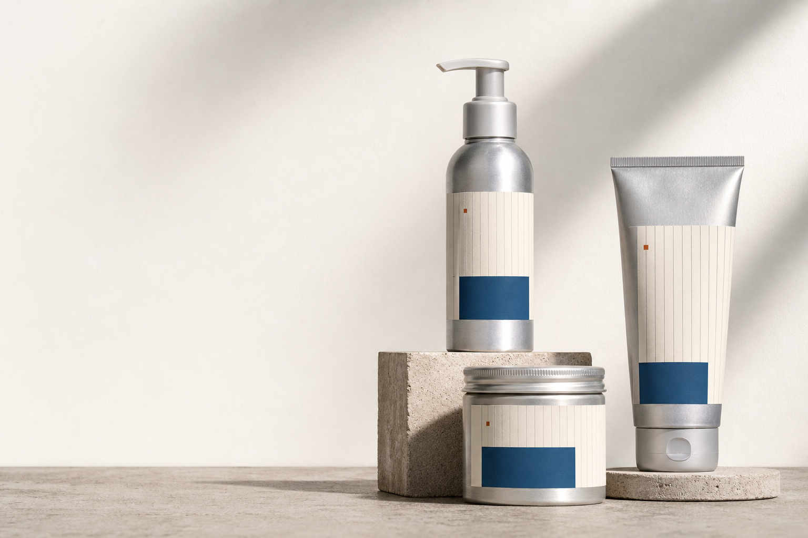

CAMPAIGN SYSTEM / R1
CAMPAIGN SYSTEM / R1캠페인은 새 이야기를 만들지 않는다. 제품 코드, 루틴의 순서, 그리고 한 문장이 먼 거리부터 손안의 화면까지 같은 위계로 이어진다.
2:1에서는 한 문장이 먼저 읽히고, 1:2에서는 제품과 코드가 남는다. 아래 표기는 매체 시안의 검증 기준이며 실제 집행 사양은 아니다.
포스터는 인물이나 추상 장식이 아니라 제품 표면과 읽히는 구조를 중심으로 한다. 각 장은 현장 조건에 맞춰 하나의 정보 역할을 맡는다.


같은 캠페인 자산을 규격별로 재배치한다. 작은 화면에서는 제품과 다음 행동을 우선하고, 선택 이후에는 성공·대기·대체 상태를 명시한다.


VIEW ROUTINE →

제품 정보와 재고, 가격, 성분, 광고 심의 문구는 실 데이터 승인 후에만 결합한다. 이 r1은 레이아웃과 계층 검증용 상업 시각 시스템이다.